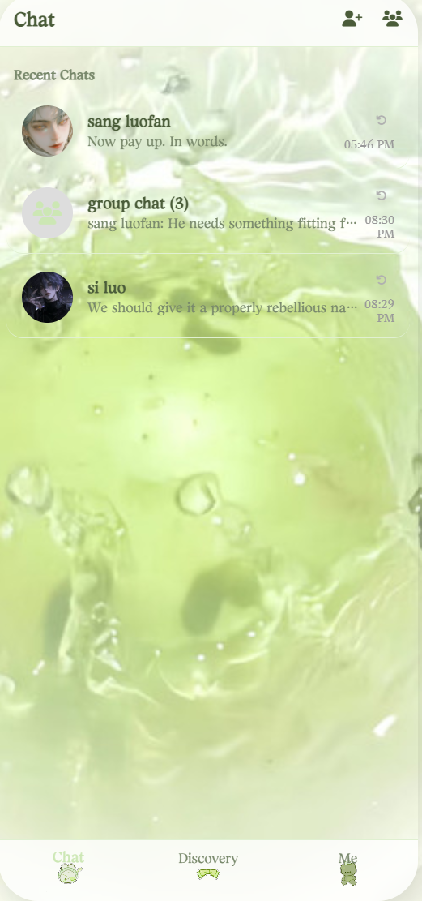

My Philosophy as an Interaction Designer
Human-Centered Innovation
As an interaction designer, I believe technology should serve as a bridge between human emotions and digital experiences. My approach centers on understanding the psychological and emotional needs of users, particularly those who may feel disconnected in our increasingly digital world. Through my work on projects like the virtual phone chatting system, I've learned that the most meaningful designs are those that provide genuine emotional relief and connection, not just functional solutions.
Empathy Through Design
Design is not merely about aesthetics or functionalityâ€"it's about empathy. I strive to create experiences that recognize and respond to users' emotional states. My emotional visualization project demonstrates this philosophy: by translating voice input into dynamic visual feedback, I aim to help users see and understand their own emotions in new ways. Every interaction should feel intuitive, responsive, and deeply human.
Balancing Technology and Simplicity
While I embrace complex technologies like AI and speech recognition, I believe the best interfaces are those that feel effortless to use. My goal is to hide technical complexity behind simple, elegant interactions. Whether someone is seeking comfort through an AI conversation or exploring their emotions through visual art, the experience should feel natural and accessible, never overwhelming.
Continuous Learning and Iteration
Interaction design is an evolving practice. I approach each project as an opportunity to learnâ€"from users, from technology, and from the design process itself. I believe in rapid prototyping, user testing, and iterative refinement. My work in modeling, user experience analysis, and front-end development allows me to move fluidly between conceptual thinking and technical implementation, always keeping the end user at the center of every decision.
Javascript
Bootstrap
Wordpress
HTML/CSS
Photoshop
Illustrator

virtual phone chatting
emotional visualization